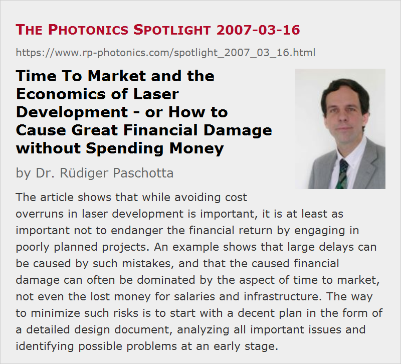

Time To Market and the Economics of Laser Development - or How to Cause Great Financial Damage without Spending Money
Posted on 2007-03-16 (revised on 2009-06-29) as a part of the Photonics Spotlight (available as e-mail newsletter!)
Permanent link: https://www.rp-photonics.com/spotlight_2007_03_16.html
Author: Dr. Rüdiger Paschotta, RP Photonics Consulting GmbH
Abstract: The article shows that while avoiding cost overruns in laser development is important, it is at least as important not to endanger the financial return by engaging in poorly planned projects. An example shows that large delays can be caused by such mistakes, and that the caused financial damage can often be dominated by the aspect of time to market, not even the lost money for salaries and infrastructure. The way to minimize such risks is to start with a decent plan in the form of a detailed design document, analyzing all important issues and identifying possible problems at an early stage.

Ref.: encyclopedia articles on laser development and laser design; web page on laser design
As everything else, industrial laser development is subject to cost constraints, and not observing those may endanger the economical value of a project. The biggest mistake, however, is not to recognize the most important economical aspects. Here is one which according to my experience appears to be overlooked surprisingly often in the laser industry: time to market (TTM).
Time to Market
Observing development cost is one thing, but that can hardly be more important than the financial return of a project – both in terms of volume and time. So while it is important to limit unexpected cost overruns, it is at least as important to avoid any significant delay of the financial return:
- Delay as such is already financially painful; this aspect can be quantified with interest rates.
- Moreover, the delayed market launch of a laser product leaves the competitors the time to establish their products, and the potential customers to find other solutions. So apart from interest, the volume of return is also at risk.
Another aspect, which is more difficult to measure, is the loss of trust experienced by customers who are waiting for the product.
Typical Delays in Laser Development
In the context of lasers, large delays can be caused by problems during the development process. Imagine, for example, that the prototype of some Q-switched laser exhibits certain nasty instabilities, and the team is not sure where these come from, let alone which measure could fix that. One month later, it is found that this problem resulted from a flaw in the used laser design. It takes another two months (to be optimistic) to get modified parts and solve the problem.
What is now the resulting financial damage?
The obvious cost is the salary of a certain number of people during that time. Next, the expensive technical infrastructure is occupied with these activities, and other infrastructure (including the building, administration, etc.) is poorly utilized; this may actually cost more than the salaries. It would be stupid enough to say “Well, we would anyway have paid these salaries and maintained the infrastructure” – after all, this additional cost has to be attributed to the project. But the clearly unacceptable failure would be not to realize the financial damage caused by the delayed financial return – which can easily be the largest financial factor, even if there will be no document with such a figure printed on it.
Note that strictly speaking that financial damage is not caused by the experienced technical problem, but by the way of handling the project.
How to Minimize the Risk
We have seen that development time must be kept under control as much as the cost. (In short: time is money!) What does this mean in the context of laser development? That it is not an acceptable practice to engage in poorly planned developments: running into the lab before having a carefully checked plan, just trying things which then turn out not to work (acting on the maxim “Just do it!”), etc.
What is required before starting any lab work (and making promises to potential customers) is a decent technical plan in the form of a design document which
- defines the goals and the taken approach,
- explains why this root is taken (e.g. why it is superior over others),
- lists the required parts,
- identifies the steps to be taken,
- and of course analyzes in appropriate depth (not more, not less!) the technical key issues – e.g., will thermal effects be under control, will the optical intensities be well below damage thresholds, etc.
Recognizing and solving problems at this stage – before parts are ordered and put together – is obviously much cheaper and faster than discovering, identifying and solving them in the prototype. What it takes is sufficient technical expertise, practical experience, and discipline.
It is no excuse not to have staff with this expertise in house, not to have the time for careful preparations, or not to have anticipated the trouble. (Anyway, what you need are results, not excuses!) If required, an experienced laser expert can be found externally, and the team will then learn from this person, possibly in order to do the job themselves next time. The cost for that will in many cases be a tiny fraction of what it can easily cost to ignore the aspect of time to market.
See also the earlier Spotlight article on laser development, and a later article on Doing things properly.
This article is a posting of the Photonics Spotlight, authored by Dr. Rüdiger Paschotta. You may link to this page and cite it, because its location is permanent. See also the RP Photonics Encyclopedia.
Note that you can also receive the articles in the form of a newsletter or with an RSS feed.
Questions and Comments from Users
Here you can submit questions and comments. As far as they get accepted by the author, they will appear above this paragraph together with the author’s answer. The author will decide on acceptance based on certain criteria. Essentially, the issue must be of sufficiently broad interest.
Please do not enter personal data here; we would otherwise delete it soon. (See also our privacy declaration.) If you wish to receive personal feedback or consultancy from the author, please contact him e.g. via e-mail.
By submitting the information, you give your consent to the potential publication of your inputs on our website according to our rules. (If you later retract your consent, we will delete those inputs.) As your inputs are first reviewed by the author, they may be published with some delay.
|  |
If you like this page, please share the link with your friends and colleagues, e.g. via social media:
These sharing buttons are implemented in a privacy-friendly way!